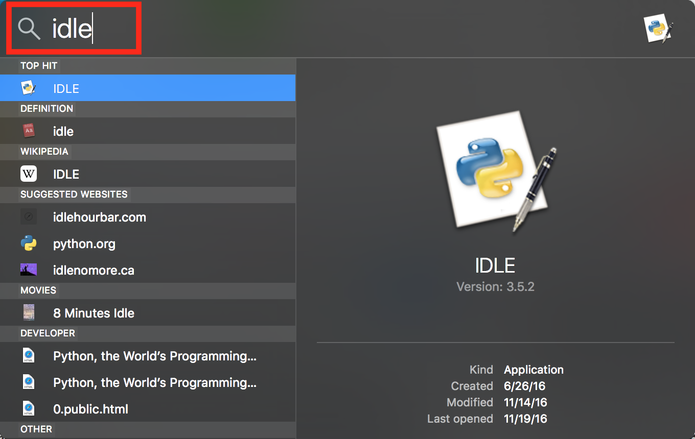
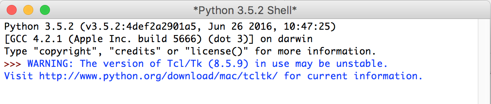
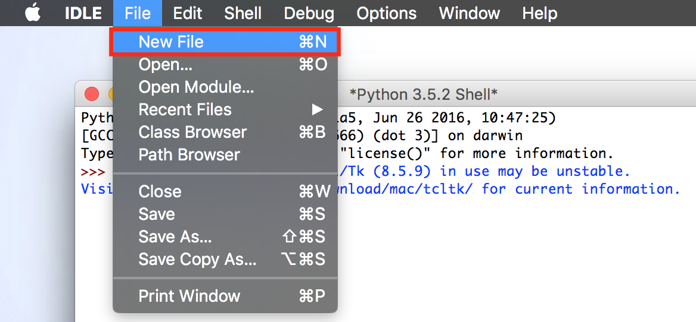
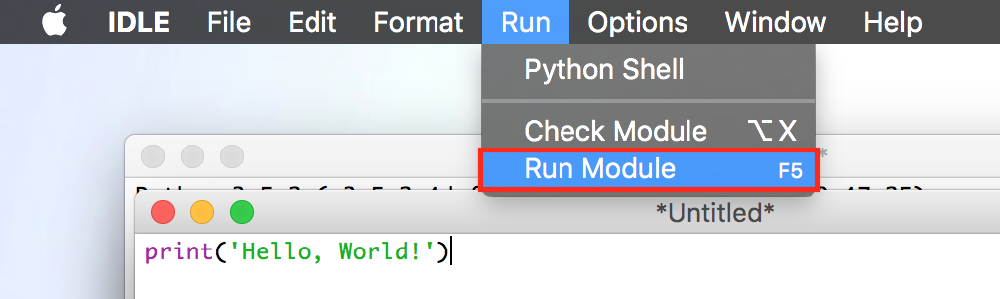
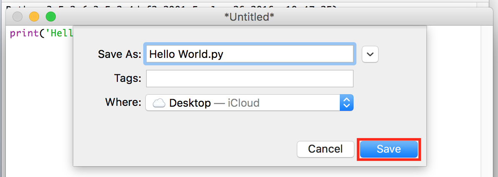
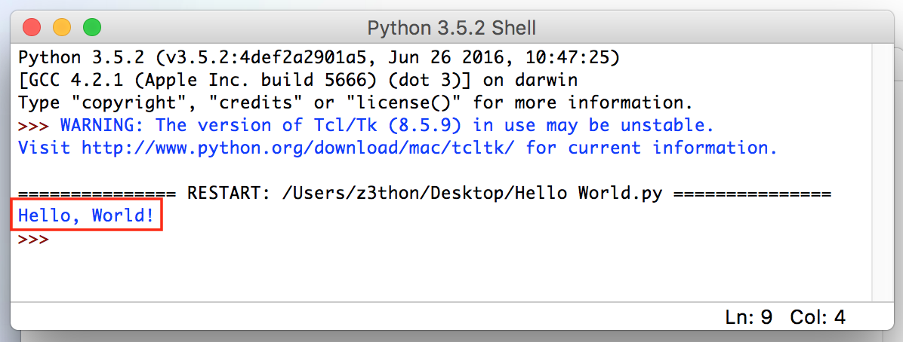
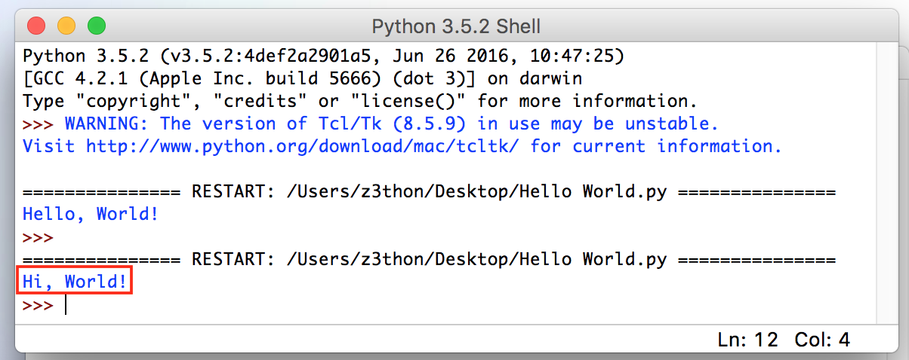

Programming with Python
The Python programming language is gaining popularity as a fundamental tool for scientific computing. Python cuts out some unnecessary syntax that other languages require, which lends to its relative simplicity. Not only is it simple to write, it is easy to learn.
Python’s popularity means there is a rich pool of learning resources and Q&A databases from which you can draw. These resources are especially useful after you download, install, and feel comfortable using, the Python programming environment.
This guide will get you there by walking you through the steps to install and setup Python. As well, you will learn basic Python programming to get you on your way.
Needed Materials
- macOS or Mac OS X
- 15-20 minutes to complete the guide
- Active internet connection
Installing Python and IDLE
- Goto http://www.python.org/downloads.
-
Click the yellow button that says 'Download Python 3.5.2.'

- Run the downloaded file once downloaded.
- Click 'Continue' on the bottom right of installation window.
- Continue clicking 'Continue' on the bottom right until it says 'Agree.'
-
Click 'Agree' to continue the installation.

-
Click 'Install' on the bottom right of installation window.

-
Enter password if prompted.

The installation will begin and make take a few minutes. Once finished, you should see:

If you see this, the installation was successful and you can continue. If you see something else, try going back to Step 3 and reinstalling Python.
-
Start Python and IDLE by pressing
Command + Spacebar, then type 'idle', and then pressEnter.  -
Confirm a new window named 'Python 3.5.2' appeared.

If this window did not open, go back and retry Step 9.
Congratuations, you have successfully installed Python and launched IDLE!
Programming in Python with IDLE
In the previous section you installed and launched IDLE! Using this program we will teach you the most basic principles of coding. Although there are many programming languages, Python is one of the more popular languages.
Below are guides to help you through your first two programming experiences using IDLE. To start, we need to learn how to use IDLE, how to create and run code.
"Hello, World!" - Your First Program
"Hello, World!" is a simple computer program that beginners write to learn how to use programming tools like IDLE. You should already have IDLE open and launched from the installation if not then refer back to Step 9 from above.
The goal of this program is to create and run code that says “Hello, World!” Literally. After you should be familiar with the following concepts in IDLE.
- Creating a new file
- Creating a new program
- Saving your code
- Running your code
- Viewing the result of your program in the console window
-
Open a new file in IDLE.
To open a new file you go to
File > New File. -
Copy and paste the code below into the new file.
print('Hello, World!')The code above types/prints "Hello, World!" to IDLE window. It uses a function called
printto do so. Each programming language is different, so this only works in Python. -
Save and run the code.
After the code is in the new file, go to
Run > Run Module.The new file window then asks where you want to save your code. Go ahead and name it "Hello World" and save it on your desktop.
 -
Check that
Hello, World!was printed in the IDLE window. At this point you should see something similar above. If not, make sure the code provided in Step 2 matches the code in your new file.
If not, change it to match and go back to Step 3.
-
Change your code to the example provided below and rerun your code.
print('Hi, World!')Changing and re-running the code shows how you can modify your code and run it at anytime.
Now go to
Run > Run Moduleagain and look at the new output! The IDLE window now showsHi, World!belowHello, World!. The most recent output is always shown at the bottom.
Congratulations! You now know how to make a new file, write your own code, save it, and run it! We’ll now go to the next excerise.